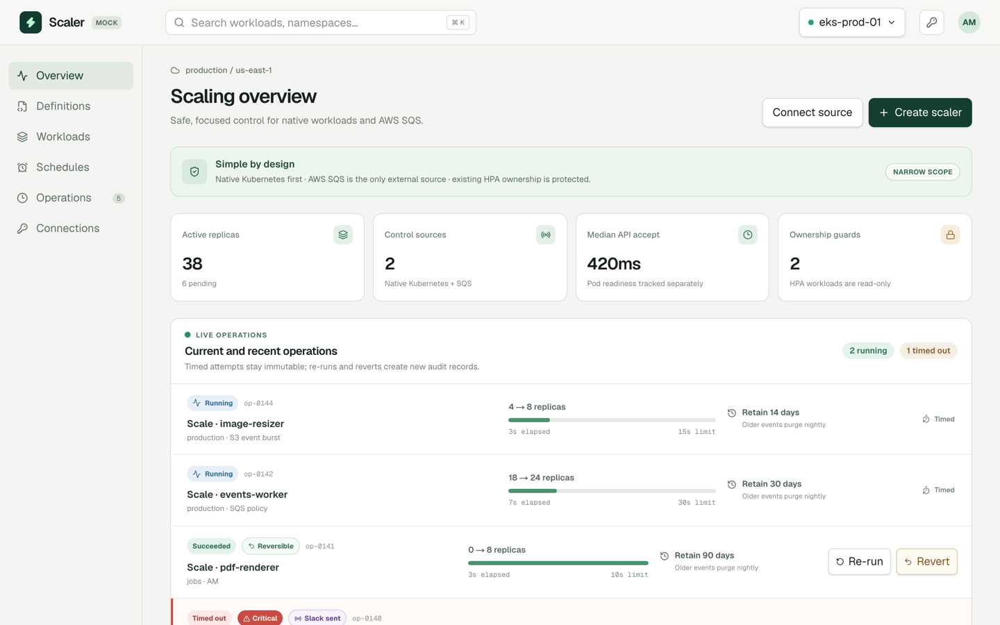

Manual scaling
Search workloads, inspect current and desired replicas, and submit a focused replica change from one dialog.
Scaler explores a focused control plane for manual replica changes, second-granularity reconciliation, schedules, suggestions, operation timing, and timeout budgets across Kubernetes workloads.

Open live demo arrow_outwardControl-plane model
Search workloads, inspect current and desired replicas, and submit a focused replica change from one dialog.
The interface models desired-state reconciliation every second and makes scaling state visible per workload.
Bring CPU, request rate, SQS depth, schedules, and recommendations into the same operational view.
Track last-operation latency, median scale time, success rate, and consumed timeout budget.
The documented access path uses local kube-proxy and explicitly warns against publishing it through ingress.
Supports node credentials, recommended least-privilege OIDC/IRSA, and static keys only for local development.
Run locally
Docker Compose starts the interface at localhost. Its controls are interactive and use representative workload data, but the current project deliberately does not modify a real cluster.
$ docker compose up --build
open http://localhost:3000
Security posture
The design recommends IRSA for EKS, an IAM role limited to configured trigger sources, and Kubernetes RBAC constrained to the intended namespaces and workload kinds.
Static AWS credentials belong only in local runtime secrets—never in the image or repository.